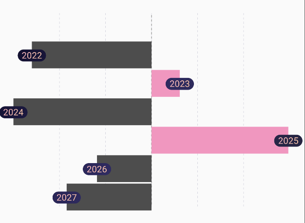
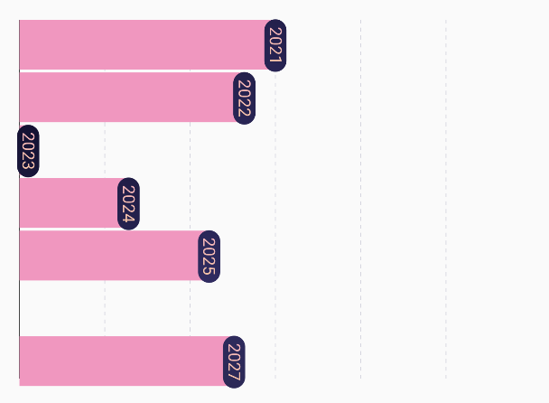

HorizontalBarChart
 |
 |
|---|---|
🍸Overview
A chart that displays a horizontal bar chart, where each bar extends horizontally based on its data value. This layout is ideal when category labels are long or when you want to emphasize value comparisons along a vertical list.
🧱 Declaration
@Composable
fun HorizontalBarChart(
data: () -> List<BarData>,
modifier: Modifier = Modifier,
barChartConfig: BarChartConfig = BarChartConfig.default(),
barChartColorConfig: BarChartColorConfig = BarChartColorConfig.default(),
horizontalBarLabelConfig: HorizontalBarLabelConfig = HorizontalBarLabelConfig.default(),
onBarClick: (BarData) -> Unit = {}
)
🔧 Parameters
| Parameter | Type | Description |
|---|---|---|
data |
() -> List<BarData> |
A lambda that returns the list of BarData entries to be displayed as horizontal bars. Each BarData contains the Y-value (bar length) and X-value (label/key). |
modifier |
Modifier |
Compose Modifier for layout control, sizing, padding, or other UI decorations. |
barChartConfig |
BarChartConfig |
Configuration object for chart behavior and layout — such as minimum number of bars, axis and grid visibility, animation, and spacing. |
barChartColorConfig |
BarChartColorConfig |
Defines color-related customization for bars, axis lines, grid lines, and background. |
horizontalBarLabelConfig |
HorizontalBarLabelConfig |
Styling and layout configuration for the labels displayed alongside the horizontal bars, such as text color, size, alignment, and optional background. |
onBarClick |
(BarData) -> Unit |
Callback function invoked when a bar is clicked. Receives the corresponding BarData item for further action (e.g., navigation, tooltip, etc.). |
📊 Data Model
Each bar is represented using the BarData class:
data class BarData(
val yValue: Float,
val xValue: Any,
val barColor: ChartColor = Color.Unspecified.asSolidChartColor(),
val barBackgroundColor: ChartColor = Color(0x40D3D3D3).asSolidChartColor(),
)
🔠 HorizontalBarLabelConfig
The horizontalBarLabelConfig parameter lets you customize how the labels for each horizontal bar are rendered.
data class HorizontalBarLabelConfig(
val showLabel: Boolean,
val hasOverlappingLabel: Boolean,
val textColor: ChartColor,
val textBackgroundColors: ChartColor,
val xAxisCharCount: Int?,
val labelTextStyle: TextStyle?,
)
If labels are not shown, users can drag their finger or scroll across the chart to reveal labels dynamically via gesture detection. This allows clean visualizations by default, but still gives access to detailed information on demand.
| Property | Type | Description |
|---|---|---|
showLabel |
Boolean |
Determines whether the label for each horizontal bar should be shown by default. If false, labels are hidden unless revealed through gestures (e.g. dragging). |
hasOverlappingLabel |
Boolean |
Indicates whether labels are allowed to overlap with each other. If true, labels may render over each other in dense datasets. |
textColor |
ChartColor |
The color of the label text. You can use solid or gradient chart colors. |
textBackgroundColors |
ChartColor |
Background color behind the label text. Useful for adding contrast or highlighting the label. |
xAxisCharCount |
Int? |
Optionally limits the number of characters shown from the X-axis label. Useful for truncation in narrow layouts. If null, no truncation is applied. |
labelTextStyle |
TextStyle? |
Custom styling for label text (e.g., font size, weight, family, line height). If null, defaults are used. |
💡 Example Usage
val performanceData = listOf(
BarData(yValue = 80f, xValue = "Alice"),
BarData(yValue = 65f, xValue = "Bob"),
BarData(yValue = 90f, xValue = "Charlie")
)
HorizontalBarChart(
data = { performanceData },
modifier = Modifier.fillMaxWidth(),
onBarClick = { bar ->
println("Clicked on ${bar.xValue} with value ${bar.yValue}")
}
)